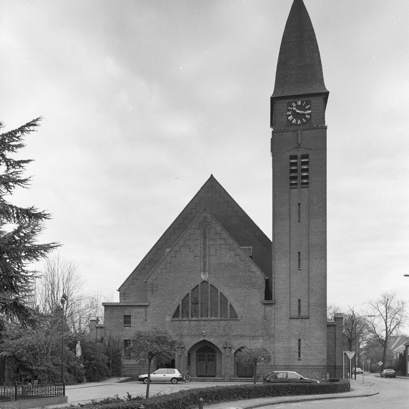

Sint Agathakerk Al in 1358 werd een Sint Agatha kapel gesticht in Boekel. Boekel viel toen nog onder de parochie van St.-Petrus te Uden. In 1627 kreeg de kapel een paar pastorale rechten en in 1677 werd Boekel een zelfstandige parochie, met een echte pastoor; Joannes de Goeij. Na een verbouwing in 1766, werd er door het groeiende inwonersaantal een nieuwe kerk gebouwd. Op 6 augustus 1832 word de kerk door Deken A. van Vugt ingezegend. Door verkeert en vochtig materiaal begon in 1915 de waterstaatskerk te verzakken. Eventueel herstel zou meer kosten dan een nieuwe kerk. In 1925 werd een nieuwe kerk gebouwd, door architect Joseph Franssen. De oude kerk werd stukje bij beetje afgebroken en eind januari 1926 viel de toren van de oude kerk.
Standbeeld Leontien van Moorsel Op het Sint Agathaplein in Boekel staat een standbeeld ter eren van wielrenster Leontien van Moorsel. Deze viervoudig Olympisch kampioene is geboren in Boekel (1970). Van Moorsel won in 1992 en in 1993 de Ronde van Frankrijk. Het standbeeld is ontworpen door kunstenaar Paul Roijmans, beeldhouwer te Reusel.